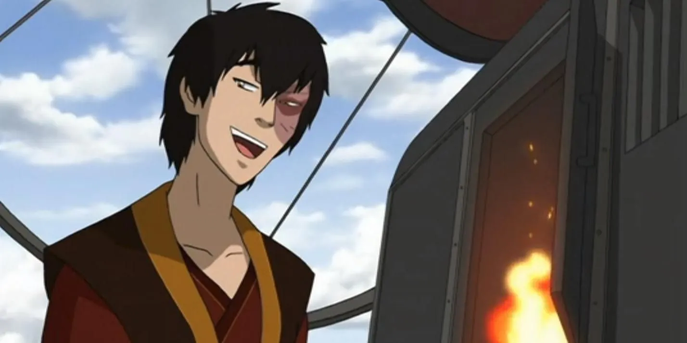
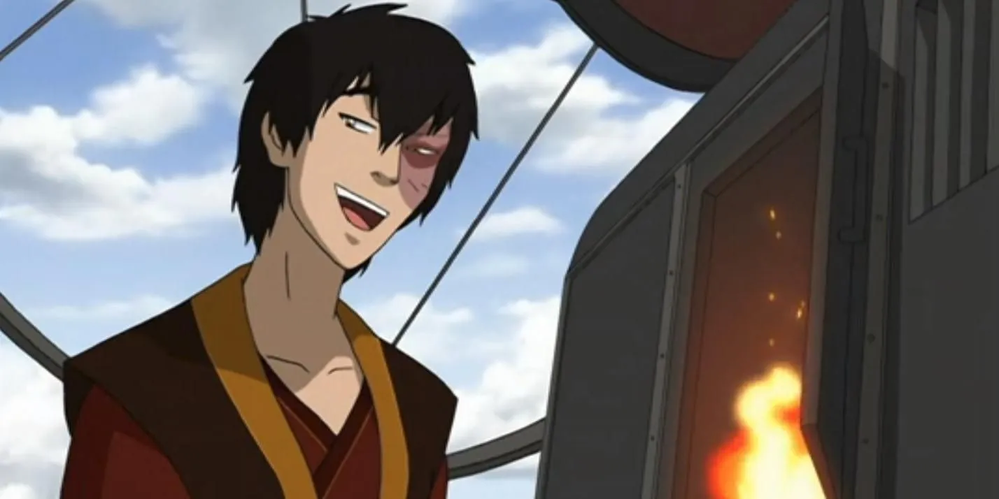

There really isn’t much for me to talk about here..Spending time with my wise and caring Uncle Iroh has been one of the most cherished aspects of my life. His guidance, wisdom, and our shared moments of tea appreciation have been instrumental in my personal growth. Tea, with its calming presence, has become a symbol of our bond and a source of comfort in times of uncertainty. For a significant part of my life, restoring my honor was my only interest. It was a pursuit that consumed me, and I believed that capturing the Avatar was the path to redemption. However, it was only when I joined Aang that I discovered the true meaning of honor.
 
